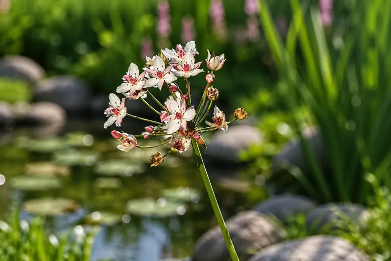

Растения для пруда
Сусак
Цена и наличие
- P936,8 BYN / шт.В наличии
Данные на 23.11.2026.
Характеристики
- Преимущества
- Очищает воду, предотвращает цветение воды, неприхотлив в уходе
- Период цветения
- Июнь-август
- Размер листьев
- 50-100 см
- Размер цветков
- 1-2 см
- Размер корневища
- 10-20 см
Описание
Сусак для пруда – это удивительное растение, которое не только украшает водоем, но и приносит множество преимуществ.
Сусак для пруда – это удивительное растение, которое не только украшает водоем, но и приносит множество преимуществ. Это многолетнее травянистое растение с красивыми розовыми или белыми цветками, которые распускаются в летний период. Сусак обладает декоративными качествами, благодаря которым он становится настоящим украшением любого пруда или водоема. Одним из главных преимуществ сусака является его способность очищать воду. Растение активно поглощает из воды излишки питательных веществ, таких как азот и фосфор, что помогает предотвратить цветение воды и развитие водорослей. Это делает сусак отличным выбором для поддержания экологического баланса в пруду. Кроме того, сусак создает идеальные условия для обитания различных водных организмов. Его густые заросли служат укрытием для мелких рыб и других водных животных, а также местом для нереста. Это способствует увеличению биологического разнообразия в водоеме и поддержанию здоровой экосистемы. Сусак также отличается неприхотливостью в уходе. Он хорошо растет на различных типах почв и может адаптироваться к разным условиям освещения. Растение устойчиво к заболеваниям и вредителям, что делает его идеальным выбором для тех, кто хочет минимизировать усилия по уходу за прудом.